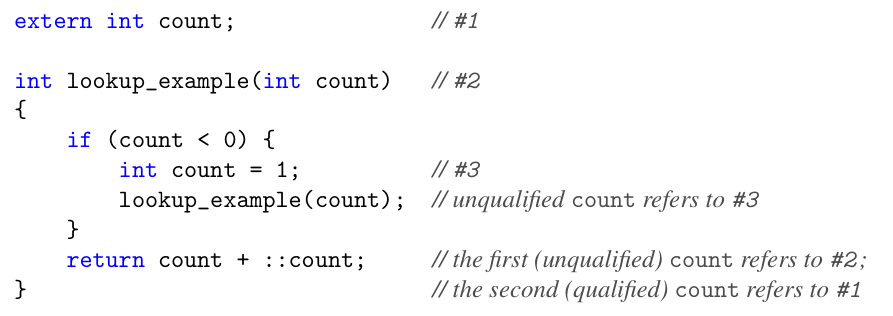
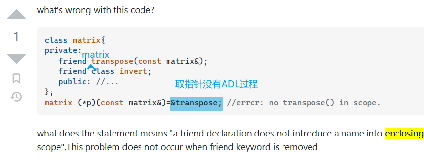

名字查找：普通查找和 ADL
普通查找和 ADL 是同时进行的，不存在优先级差异。这些被找到的函数被放在一起参与重载决议。如果没有因为一般性的重载决议规则决出优劣，则会引发 ambiguous 指代错误。
ordinary lookup: 内部名称遮盖外部名称的规则

ADL: 考虑参数类型所在名字空间的函数和操作符重载
相关类型有很多规则，比如指针会引入其指向类型的名字空间、类会引入外围类（如果是一个内部类）和基类的名字空间、函数会引入其参数和返回值的名字空间等（P219）。特例是 hidden friends，可以直接定义在类中。
ADL 失效的情况：① 调用前给函数名加上括号，这样就必须先找到函数。② 函数模板在 C++20 之前除非在外部声明函数模板（参数列表可以不同），否则也无法被找到。因为在还没有看参数的情况下，函数模板没有被引入；还没有看参数列表的情况下不知道这个是函数模板；不知道这个是函数模板的情况下会把参数列表的头尾理解成大于和小于操作符。这是一种鸡生蛋蛋生鸡的问题。③ ADL 会忽略 using 声明，只考虑真正存在于名字空间的函数。
ADL 只会通过参数（也就是显式调用）引入额外的函数和操作符，其他情况下这些名称是不会被自动引入的，比如取一个和参数相关的函数指针。
